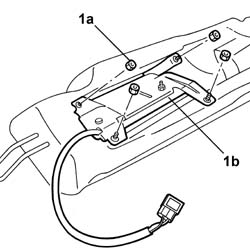
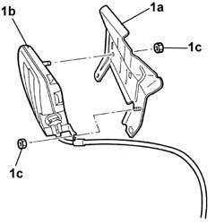

5580C60 Rear seat Side Bag Module (one), left or right - R.R.
- Path
- Procedures > 55 ELECTRICAL EQUIPMENT > 5580 SPECIAL ACCESSORIES > 5580C AIR BAG SYSTEM > 5580C60 Rear seat Side Bag Module (one), left or right - R.R.
- Kind
- repair procedure (removal / refitting; the operation number is the code)
- Applies to
- all engines; all production periods
- Interactive page
- https://sloeber94.github.io/elrnDB-lThss/en/#/150820
Applies to: all engines; all production periods
Applies to: all engines; all production periods
 Removing
Removing
 Refitting
RefittingSee in Op. 7050A20 Single rear seat cushion - R.R.
See in Op. 7050A19 REAR SEAT BACKREST - R.R.
1. Undo the lower fixing bolt (1) and remove the Air Bag module for the rear seat (1b) from the housing.

Applies to: all engines; all production periods
1. At the bench, separate the bracket (1a) from the side bag module (1b) undoing the fixing nuts (1c).

Applies to: all engines; all production periods
Refitting
Removing- Fit the bracket to the side bag module, tightening the fixing nuts to torque.
 | Value - daNm | Fastening | Component | Ø |
|---|---|---|---|---|
. | 4 | Nut | REAR SIDE BAG MODULE | - |
- Fit the side bag module on the upholstery and secure it tightening the nuts to the recommended torque.
| Value - daNm | Fastening | Component | Ø |
|---|---|---|---|---|
. | 4 | Nut | REAR SIDE BAG MODULE | - |
-
See in Op. 7050A19 REAR SEAT BACKREST - R.R.
-
See in Op. 7050A20 Single rear seat cushion - R.R.
- Connect the battery leads.
Topics linked from this page (3)
- 7050A19 REAR SEAT BACKREST - R.R.
- 7050A20 Single rear seat cushion - R.R.
- 7050D43 Rear seat backrest side panel cover (one), left or right - R.R. with panel removed